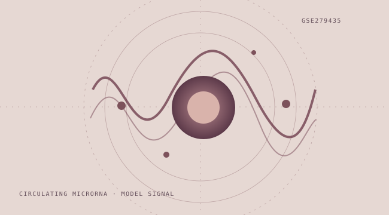

Endometriosis Biomarker Signal Lab
A reproducible case study using public serum miRNA data to explore what robust validation can — and cannot — establish in small-sample biomarker research.

Start with the question.
Can a reproducible, leakage-aware workflow distinguish cases and controls using a small, high-dimensional miRNA dataset — and how stable is the signal under resampling?
Know the data.
The public cohort described by GEO GSE279435 contains 67 cases and 60 controls. The analysis uses the deposited normalized −ΔCt data. Upstream assay QC and normalization were performed by the source study; they are not recreated from raw instrument files in this project.
Make the methods visible.
- Track dataset and assay/normalization provenance rather than treating the input matrix as raw Ct data.
- Fit feature detection handling, imputation and scaling within the training folds.
- Use nested cross-validation to tune elastic-net logistic regression and evaluate held-out predictions.
- Review ROC / precision–recall behaviour, bootstrap uncertainty, threshold sensitivity and feature stability.
What it means.
The result is a framework for interrogating a potential biomarker signal, not proof of a diagnostic test. A model can appear promising while remaining fragile to sampling, preprocessing choices or changes in the population.
What it does not mean.
- No new wet-lab replication or independent clinical validation is provided by this portfolio exercise.
- The available matrix is pre-normalized; raw instrument-level QC cannot be fully reconstructed here.
- Clinical decision thresholds and transportability require additional prospective evidence.
For implementation details, files and the project documentation, inspect the public GitHub repository ↗.